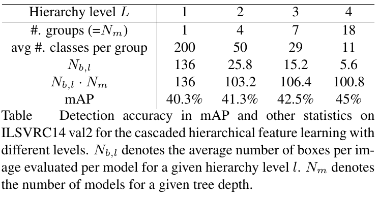

Learning Deep Representation with Large-scale Attributes
Wanli Ouyang, Xiaogang Wang, Cong Zhang and Xiaokang Yang
Department of Electronic Engineering, The Chinese University of Hong Kong and Shanghai Jiaotong University
Wanli Ouyang, Xiaogang Wang, Cong Zhang and Xiaokang Yang
Department of Electronic Engineering, The Chinese University of Hong Kong and Shanghai Jiaotong University
Under construction
Finetuning from a pretrained deep model is found to yield state-of-the-art performance for many vision tasks. This paper investigates many factors that influence the performance in finetuning for object detection. There is a long-tailed distribution of sample numbers for classes in object detection. Our analysis and empirical results show that classes with more samples have higher impact on the feature learning. And it is better to make the sample number more uniform across classes. Generic object detection can be considered as multiple equally important tasks. Detection of each class is a task. These classes/tasks have their individuality in discriminative visual appearance representation. Taking this individuality into account, we cluster objects into visually similar class groups and learn deep representations for these groups separately. A hierarchical feature learning scheme is proposed. In this scheme, the knowledge from the group with large number of classes is transferred for learning features in its sub-groups. Finetuned on the GoogLeNet model, experimental results show 4.7 absolute mAP improvement of our approach on the ImageNet object detection dataset without increasing much computational cost at the testing stage.
The code will be released later.
Note that our dataset is released under the BSD 2-Clause license. Please use the dataset for research purpose only.

We use the ImageNet 2014 training data and val1 data as the training data and the val2 data for evaluating the performance if not specified. The split of val1 and val2 is the same as that in because it was downloaded from the authors’ web. The attribute annotations are not required at the testing stage because they are only used for supervising feature learning. We only evaluate the performance on object detection instead of attribute prediction because the aim of this work is to study how rich attribute annotation can help feature learning in detection.
Some highlight results are shown below. For more details, please check the paper.

For inquiries, please contact Wanli Ouyang via wlouyang@ee.cuhk.edu.hk.
Last updated: Jan. 5th, 2016.